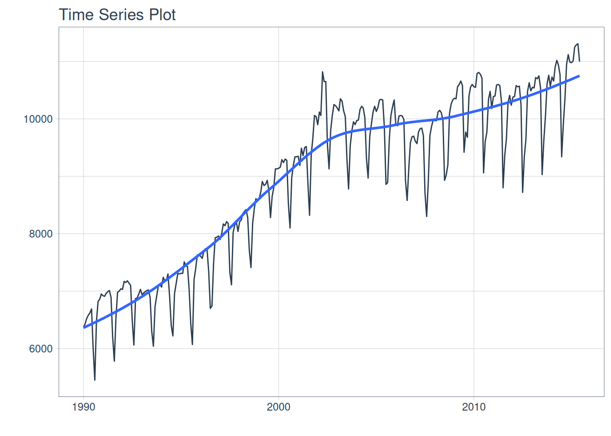
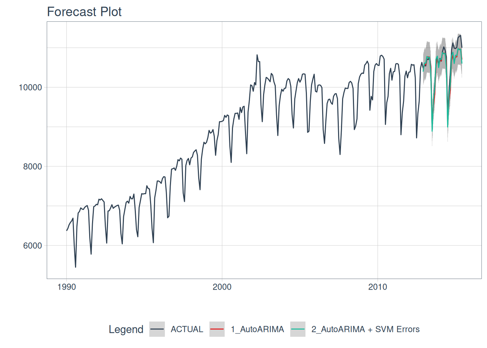
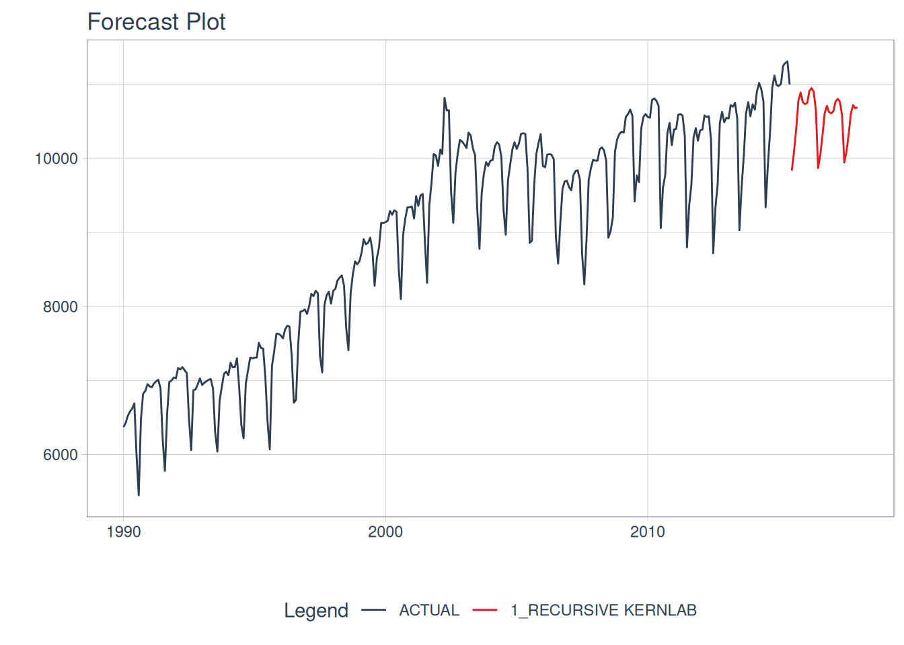

library(modeltime)
library(ggplot2)
library(kernlab)
#>
#> Attaching package: 'kernlab'
#> The following object is masked from 'package:ggplot2':
#>
#> alpha
#> The following object is masked from 'package:modeltime':
#>
#> error
library(parsnip)
library(timetk)
library(maize)
#>
#> Attaching package: 'maize'
#> The following object is masked from 'package:parsnip':
#>
#> check_argsharvestime
{maize} for time series
{maize} continues into the realm of novel ML techniques. In this release, we are looking at extending SVMs into time series. How does this work in maize? In one of two ways: enhancing ARIMAs or via a recursive framework.
ARIMA + SVM Errors
Based on the notorious “Boosted” ARIMA implementation in time series machine learning. maize swaps the XGBoost algorithm with an SVM with Laplacian Kernel.
Within this implementation, both autoARIMA and ARIMA models are both supported, with or without external regressors. This framework leverages two model fits! First, an ARIMA model to fit a time series regression for the outcome variable. Next, an SVM regression is fit on the model residuals.
this code follows along with {modeltime}’s getting started.
m750 <- m4_monthly |> dplyr::filter(id == "M750")
m750 |>
plot_time_series(date, value, .interactive = FALSE)
Splitting our data and fitting two models, a regular AutoARIMA, and the AutoARIMA + SVM Laplace Errors.
# Split Data 80/20
splits <- rsample::initial_time_split(m750, prop = 0.9)
# benchmark model:
model_fit_arima_no_svm <- arima_reg() |>
set_engine(engine = "auto_arima") |>
fit(value ~ date, data = rsample::training(splits))
#> frequency = 12 observations per 1 year
# arima SVM errors:
model_fit_arima_svm <- arima_svm_laplace(
cost = 10,
margin = .1,
laplace_sigma = .2
) |>
set_engine(engine = "auto_arima_svm_laplace") |>
fit(value ~ date + as.numeric(date) + factor(lubridate::month(date, label = TRUE), ordered = F),
data = rsample::training(splits))
#> frequency = 12 observations per 1 year
model_fit_arima_svm
#> parsnip model object
#>
#> ARIMA(0,1,1)(0,1,1)[12] w/ SVM Errors
#> ---
#> Model 1: Auto ARIMA
#> Series: outcome
#> ARIMA(0,1,1)(0,1,1)[12]
#>
#> Coefficients:
#> ma1 sma1
#> -0.3405 -0.4781
#> s.e. 0.0652 0.0628
#>
#> sigma^2 = 25114: log likelihood = -1699.55
#> AIC=3405.1 AICc=3405.19 BIC=3415.8
#>
#> ---
#> Model 2: SVM Errors
#>
#> parsnip model object
#>
#> Support Vector Machine object of class "ksvm"
#>
#> SV type: eps-svr (regression)
#> parameter : epsilon = 0.1 cost C = 10
#>
#> Laplace kernel function.
#> Hyperparameter : sigma = 0.2
#>
#> Number of Support Vectors : 244
#>
#> Objective Function Value : -1115
#> Training error : 0.574759parsnip minimal output:
modeltime calibration and autoplots:
models_tbl <- modeltime_table(
model_fit_arima_no_svm,
model_fit_arima_svm
)
calibration_tbl <- models_tbl |>
modeltime_calibrate(new_data = rsample::testing(splits))
calibration_tbl$.model_desc <- c("AutoARIMA", "AutoARIMA + SVM Errors")Calibrated AutoARIMA vs. AutoARIMA w/ ‘SVM Laplacian Kernel’ Errors predictions:
calibration_tbl |>
modeltime_forecast(
new_data = rsample::testing(splits),
actual_data = m750
) |>
plot_modeltime_forecast(
.legend_max_width = 25, # For mobile screens
.interactive = FALSE
)
#> Warning in max(ids, na.rm = TRUE): no non-missing arguments to max; returning
#> -Inf
Recursive SVMs
Recursive SVMs are a bit different than the ARIMA method mentioned above. This framework does not depend on a traditional statistical method such as ARIMA, but revolves around lagged features of the outcome variable as a predictor. This deviates from the parsnip base models and leans towards modeltime. In maize, the goal is to have a simple lagged interface for SVMs, not typically supported elsewhere.
This autoregressive machine learning technique can be read about more in the {modeltime} documentation here. Note there are many methods for lagged & rolling transformations, below we will showcase a simple lag transformer. {maize} does not currently have recursive() bindings but showcases how to use maize with modeltime’s recursive() below!
# splits
splits <- rsample::initial_time_split(m750, prop = 0.9)
training <- rsample::training(splits)
testing <- rsample::testing(splits)
# horizon and number of lags:
horizon <- nrow(testing)
lag_transformer <- function(data){
data |>
timetk::tk_augment_lags(value, .lags = 1:horizon)
}
extended <- m750 |>
dplyr::group_by(id) |>
timetk::future_frame(
.length_out = horizon,
.bind_data = TRUE
)
#> .date_var is missing. Using: date
m4_lags <- extended |>
lag_transformer()
train_data <- m4_lags |>
tidyr::drop_na()
future_data <- m4_lags |>
dplyr::filter(is.na(value))
model_fit_recursive_svm_laplace <- svm_laplace(
mode = "regression",
cost = 10,
margin = .1,
laplace_sigma = .2
) |>
set_engine("kernlab") |>
fit(
value ~ .
+ lubridate::month(date, label = TRUE)
+ as.numeric(date)
- date,
data = train_data
) |>
modeltime::recursive(
transform = lag_transformer,
train_tail = tail(train_data, horizon)
)
model_tbl <- modeltime_table(
model_fit_recursive_svm_laplace
)
model_tbl |>
# Forecast using future data
modeltime_forecast(
new_data = future_data,
actual_data = m750
) |>
# Visualize the forecast
plot_modeltime_forecast(
.interactive = FALSE,
.conf_interval_show = FALSE
)
#> Adding missing grouping variables: `id`